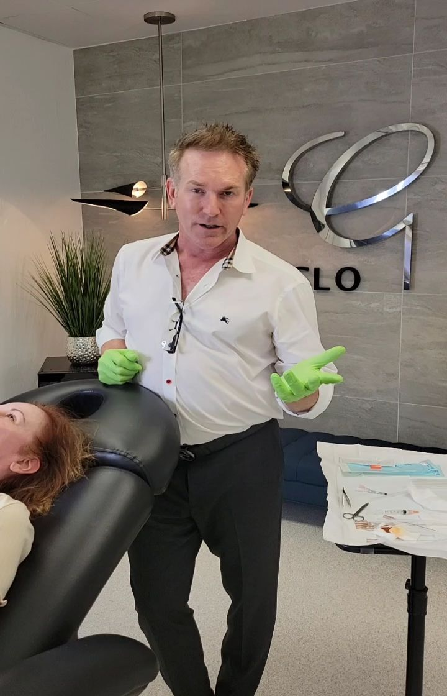

Glo Medspa · Scottsdale
Wrinkle relaxers and fillers placed with a natural eye — Charles's signature work. Every injectable at Glo starts with a conversation, not a sales pitch, and the goal never changes: you, looking rested — never overdone. New clients receive 10% off all services.
Botox Cosmetic is a prescription medicine that is injected into muscles and used to improve the look of moderate to severe frown lines between the eyebrows — the glabellar lines — in adults. Results last 3–6 months.
At Glo, Botox is placed by Charles Small, BSN, RN, who brings 15 years of critical care experience and basic and advanced certifications in Botox and Juvederm injection techniques to every appointment. The goal is always the same: you, looking rested — never frozen, never overdone.
Book a ConsultationDysport is a prescription medicine similar to Botox that is injected into muscles and used to improve the look of moderate to severe frown lines in adults.
It is a genuine favorite at Glo — in review after review, clients single out Tara's Dysport work for its skill, precision and natural results. If you have been disappointed elsewhere, this is the chair to try.
Book a ConsultationLetybo sits alongside Botox and Dysport on Glo's injectables menu, giving Charles another wrinkle-relaxing option to work with. Which relaxer is right for you is a conversation, not a sales pitch — at your consultation, he will look at your face, listen to what you want, and recommend the one that fits. And if you don't need it, he will tell you that too.
Book a ConsultationLip filler adds volume and definition to the lips — restoring what time takes away, or refining the shape that's naturally there.
At Glo, this is Charles's signature work, placed with a natural eye so the result looks like you on your best day. He will tell you honestly how much is enough — and when enough is enough.

Cheek filler adds volume back to the cheeks — one of the first places the face loses fullness, and one of the areas Glo focuses on when restoring facial volume. Done well, it doesn't look like filler at all. It looks like rest.
Book a ConsultationChin filler adds volume and definition to the chin, balancing the profile and supporting the lower face. It is another of the areas Glo targets when restoring facial volume — always in proportion, never in isolation.
Book a ConsultationJaw filler adds definition along the jawline, sharpening the line where face meets neck. As with every filler at Glo, the amount is guided by your face — not by the syringe.
Book a ConsultationThe tear trough is the hollow beneath the eye that can make you look tired even when you are not. Carefully placed filler softens that hollow, so the face reads rested instead of worn.
Book a ConsultationSmile lines — the folds that run from the nose to the corners of the mouth — deepen as the face loses volume. Filler softens their appearance while keeping your expression completely, recognizably yours.
Book a ConsultationLiquid rhinoplasty uses dermal filler to refine the shape of the nose — smoothing the look of a bump or balancing the profile — without surgery.
It is a consultation-first treatment. Charles will look at your profile with you and tell you honestly what filler can do, and what it can't.
Book a ConsultationA thread lift is a procedure that uses a dissolvable suture to tighten and lift your skin. It is a less invasive procedure than a facelift, and it can often be performed in about an hour.
At Glo, threads are part of the same natural-look philosophy as everything else: a lift that still looks like you.

Kybella (deoxycholic acid) injection is the first and only FDA-approved injectable drug that contours and improves the appearance of moderate to severe fat below the chin — also called a “double chin.”
If the fullness under your chin bothers you, Kybella is worth a conversation. Charles will assess the area honestly at your consultation and tell you whether it is the right tool for you.
Book a ConsultationTell us what you'd like to change — we'll tell you honestly what will get you there, and what won't. No pressure, ever.